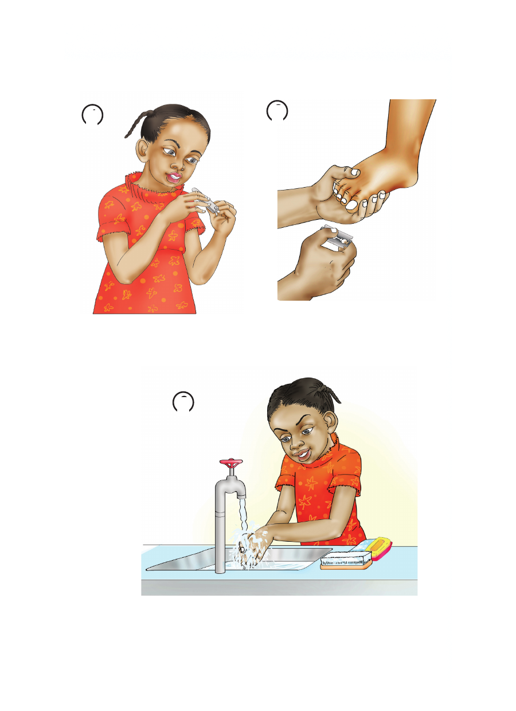

Vitendo vya kukata kucha
2
1
Kukata kucha kwa kutumia Kukata kucha kwa kutumia
kikata kucha wembe
3
Kusafisha mikono kwa maji na sabuni
Vitendo vya kukata kucha 2 1 Kukata kucha kwa kutumia Kukata kucha kwa kutumia kikata kucha wembe 3 Kusafisha mikono kwa maji na sabuni